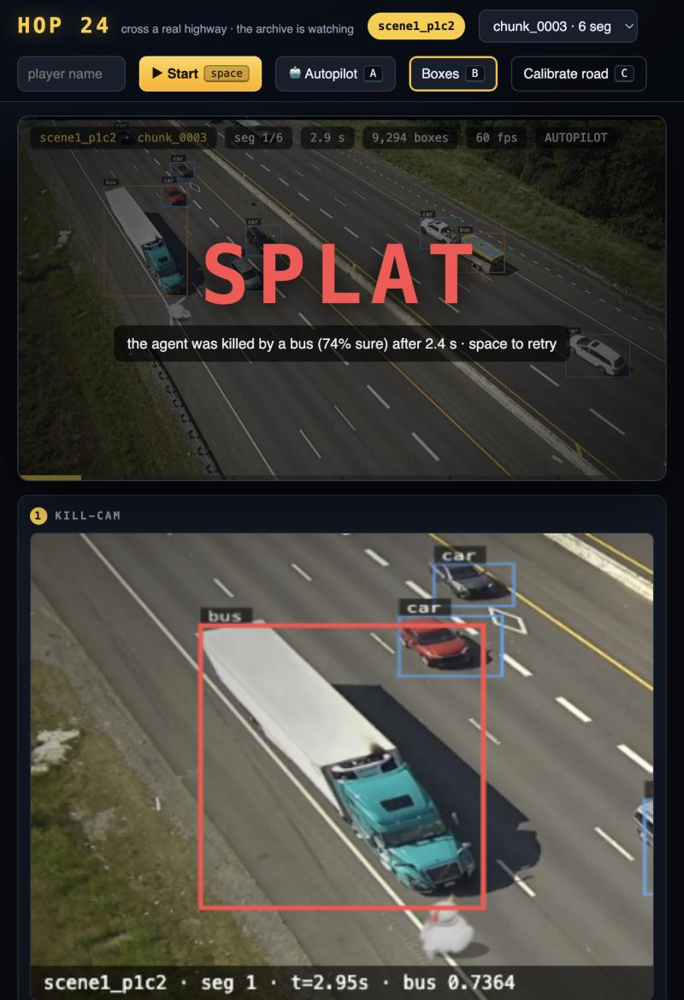
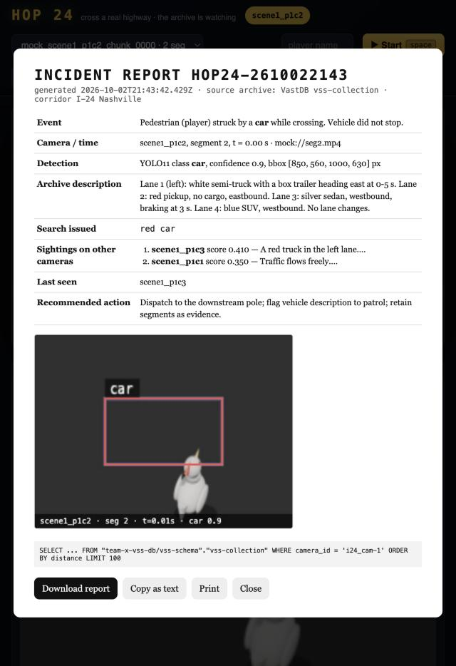
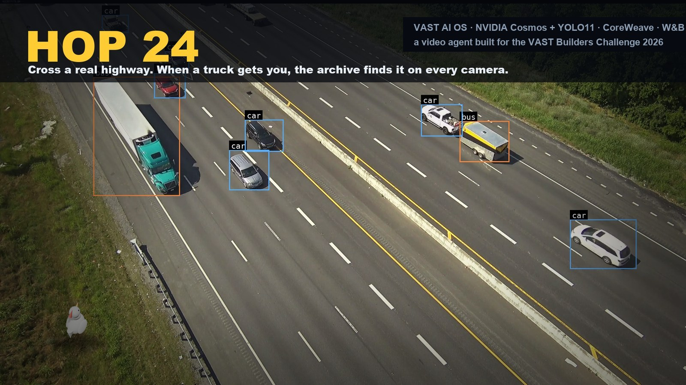

Tap to start, swipe up to hop. Every car on your phone is real Nashville traffic, every collision is a real detection stored in VastDB.
LIVE SCOREBOARD
waiting for the first player…
VAST Builders Challenge 2026 · Team 10
HOP24
Cross a real highway. The archive is watching.
A video agent built on VAST AI OS · NVIDIA Cosmos + YOLO11 · CoreWeave · Weights & Biases
The problem
Nobody watches the archive
0
video chunks indexed for the team
0
I-24 highway clips, 3 cameras on one pole
0
YOLO boxes stored for one 30-second clip
A vehicle hits someone and keeps going. An operator opens cameras one by one and scrubs 30-second clips by hand — while the pipeline already wrote a description, vectors and boxes for every five seconds of it.

LIVE DEMO · L
The idea
A game you cannot fake
▸ Real I-24 footage streamed from the archive — not an animation.
▸ Every box is a YOLO11 detection the pipeline already stored in VastDB.
▸ The road axis is fitted from those boxes. Collision = chicken touches a stored vehicle.
▸ The archive is the physics.
Kill-cam
Slow motion, then the evidence frame
Last 2.4 s at 0.35×, the killer's class tracked in red.
Evidence frame with camera · segment · time · class · confidence burned in.
Nothing staged: the vehicle that hit me is whatever YOLO put in that box.
The archive already knew
Every five seconds, the pipeline wrote it all down
Segmenter5 s clips → S3
YOLO11sboxes at 30 fps
Cosmos3-Reasondescription
Cosmos Embed1256-d vectors
VastDBvss-collection
0
of 180 highway captions name a vehicle colour
0
say which lane the vehicle is in
0
give a lane number — remember that gap
LIVE DEMO · L
Manhunt
One hybrid query, every camera
scene1_p1c1
candidate sightings
0.35
scene1_p1c2
scene of crime
●
scene1_p1c3
strongest match
0.41
FILED
Action
Incident report generated and filed

Event · camera · time
Detection, confidence, bbox
Stored description · query issued · VastDB SQL
Sightings on other cameras · last seen · recommended action
Download, copy, print. Thirty seconds ago this was a chicken getting hit.
Sharpen the archive
The prompt decides what gets indexed
BEFORE · stock prompt
AFTER · investigator prompt via DataEngine
POST /dashboard/reingest · custom prompt ≤ 800 chars · detector → reasoner → embedder → VastDB writer · takes minutes, so it is pre-run.
LIVE DEMO · A
Autopilot
The agent crosses on its own — a policy it learned
Offline simulator from the real detections of all 30 chunks. Tabular Q-learning; state = time-to-impact of the current, next, next-but-one and previous lane, plus progress.
rule-based agent · crossings 39% · on this camera 31%
learned policy · crossings 41% · on this camera 46%
9,000 episodes · logged to Weights & Biases · no peeking at future frames
Architecture
Built on the archive, not beside it

Built on the archive, not beside it
problem → archive → search across cameras → action
The archive's own detections are the physics. One query covers every camera. The agent can already cross on its own.
The data was always there. We just gave it something to do.